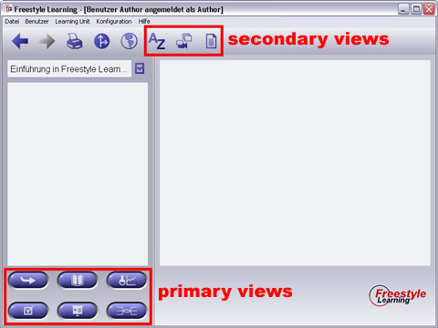

Nach einer Learning Unit-Auswahl werden die Learning Unit-Perspektiven (Views) und deren Lerninhalte geladen. Dieser Prozess wird durch eine Fortschrittsanzeige symbolisiert. Welche der Views zur Auswahl stehen, hängt davon ab, ob sie in einer bestimmten Learning Unit unterstützt werden.

Primary Activation Buttons
Im linken, unteren Fensterbereich sind eine Reihe von so genannten Primary Activation Buttons angeordnet. Über diese Schaltflächen können Sie sich Ihren eigenen Weg zum Bearbeiten der Lerninhalte bahnen. Üblicherweise führen Ihre ersten Schritte bei einer Learning Unit durch diese primären Perspektiven (primary views), in denen Sie sich intensiv mit dem Lerninhalt auseinandersetzen und sich sowohl Grund- als auch Detailkenntnisse aneignen und überprüfen können.
Secondary Activation Buttons
In der Toolbar unterhalb der Menuleiste finden Sie Schaltflächen zur Aktivierung von sekundären Perspektiven, den Secondary Views. Über diese Schaltflächen gelangen Sie zu Perspektiven, in denen zusätzliches Material, Multimedia-Elemente, Notizen oder beliebige andere Nachschlage-Referenzen strukturiert aufbereitet sein können.
Hinweis: Wenn Sie Freestyle Learning starten, sind zunächst alle Perspektiven deaktiviert. Sobald Sie eine Learning Unit geladen haben, werden die spezifischen Perspektiven angezeigt und lassen sich durch Anklicken der Primary Activation Buttons oder Secondary Activation Buttos in der Toolbar starten. Sie können sich beliebig durch Drücken der Primary und Secondary Activaton Buttons durch die einzelnen View Manager navigieren.
Zurück zur Hauptseite